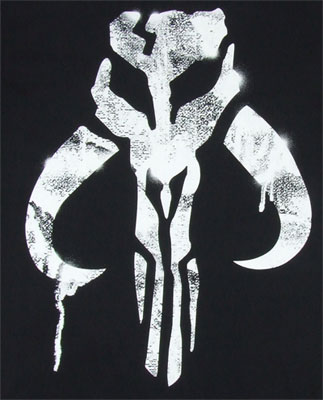

XWing - Kartendatenbank
Kartendaten
Hier kommen die Kartendaten raus.

Hier kommen die Kartendaten raus.
Die Rebellenallianz konzentriert sich mit allen Kräften darauf das Galaktische Imperium zu stürzen und die Demokratie in der Galaxie wiederherzustellen.
Das Galaktische Imperium regiert mit eiserner Faust die Galaxie, sie stehen im Bürgerkrieg mit der Rebellenallianz und versuchen den Aufstand mit allen Mitteln zu zerschlagen.
Krieg ist für den Abschaum und kriminelle Banden immer ein guter Zeitpunkt, um Profit zu schlagen, so kämpfen Söldner, Schmuggler und andere Verbrecher zwischen den Hauptfronten des Bürgerkriegs für Geld, Waffen und Fracht für Profit.
Absatz für die Karten